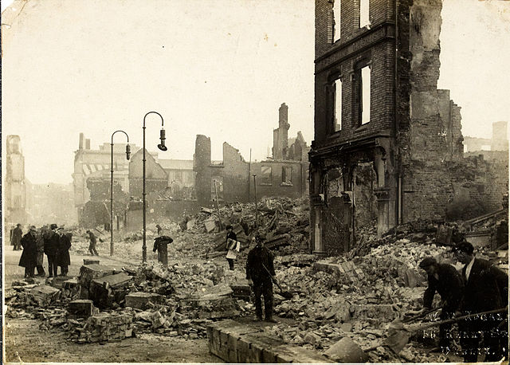

About Cork
Cork is a city in south-west Ireland, in the province of Munster, which had a population of 125,657 in 2016. The city is on the River Lee which splits into two channels at the western end and divides the city centre into islands. They reconverge at the eastern end where the quays and docks along the river banks lead outwards towards Lough Mahon and Cork Harbour, one of the largest natural harbours in the world.
Expanded by Viking invaders around 915, the city's charter was granted by Prince John, as Lord of Ireland, in 1185. Cork city was once fully walled, and the remnants of the old medieval town centre can be found around South and North Main streets.
The third largest city on the island of Ireland, the city's cognomen of "the rebel city" originates in its support for the Yorkist cause in the Wars of the Roses. Corkonians often refer to the city as "the real capital", a reference to its opposition to the Anglo-Irish Treaty in the Irish Civil War.
History
Early settlement
Cork was originally a monastic settlement, reputedly founded by Saint Finbarr in the 6th century. Cork achieved an urban character at some point between 915 and 922 when Norseman (Viking) settlers founded a trading port. It has been proposed that, like Dublin, Cork was an important trading centre in the global Scandinavian trade network. The ecclesiastical settlement continued alongside the Viking longphort, with the two developing a type of symbiotic relationship; the Norsemen providing otherwise unobtainable trade goods for the monastery, and perhaps also military aid.
The city
The city's charter was granted by Prince John, as Lord of Ireland, in 1185. The city was once fully walled, and some wall sections and gates remain today. For much of the Middle Ages, Cork city was an outpost of Old English culture in the midst of a predominantly hostile Gaelic countryside and cut off from the English government in the Pale around Dublin. Neighbouring Gaelic and Hiberno-Norman lords extorted "Black Rent" from the citizens to keep them from attacking the city. The present extent of the city has exceeded the medieval boundaries of the Barony of Cork City; it now takes in much of the neighbouring Barony of Cork. Together, these baronies are located between the Barony of Barrymore to the east, Muskerry East to the west and Kerrycurrihy to the south.
The city's municipal government was dominated by about 12–15 merchant families, whose wealth came from overseas trade with continental Europe – in particular the export of wool and hides and the import of salt, iron and wine. The medieval population of Cork was about 2,100 people. It suffered a severe blow in 1349 when almost half the townspeople died of plague when the Black Death arrived in the town. In 1491, Cork played a part in the English Wars of the Roses when Perkin Warbeck a pretender to the English throne, landed in the city and tried to recruit support for a plot to overthrow Henry VII of England. The then mayor of Cork and several important citizens went with Warbeck to England but when the rebellion collapsed they were all captured and executed. The title of Mayor of Cork was established by royal charter in 1318, and the title was changed to Lord Mayor in 1900 following the knighthood of the incumbent Mayor by Queen Victoria on her Royal visit to the city.
Modern history
Since the nineteenth century, Cork had been a strongly Irish nationalist city, with widespread support for Irish Home Rule and the Irish Parliamentary Party, but from 1910 stood firmly behind William O'Brien's dissident All-for-Ireland Party. O'Brien published a third local newspaper, the Cork Free Press.
In the War of Independence, the centre of Cork was burnt down by the British Black and Tans, in an event known as the "Burning of Cork" and saw fierce fighting between Irish guerrillas and UK forces. During the Irish Civil War, Cork was for a time held by anti-Treaty forces, until it was retaken by the pro-Treaty National Army in an attack from the sea.How to get to Cork
There are many ways to get to Cork including by air, sea, road, and rail.
By Air

Our airport is located just 10 minutes from Cork City centre. Bus and taxi services are available just outside the arrivals area. Cork Airport offers direct flights from almost 50 destinations around Europe and a direct transatlantic flight to North America. For a full list of inbound flights visit Cork Airport's website
By Sea

Located just 15km from Cork City centre, our ferry terminal offers easy access to and from
mainland Europe. Brittany
Ferries operate daily services between Cork-Roscoff (France) and Cork-Santander in
(Spain).
Cork is also accessible via ferry from Rosslare and Dublin. Both ports offer daily services
between Ireland-UK
and are just a 3-hour drive away via car/bus. Operators at these ports include Irish Ferries,
Stenaline and P&O Ferries.
By Car
Cork is linked to Dublin via the M8 motorway and takes just over 2.5 hours. Car hire is available from depots in Cork City and all major airports. Cork has an abundance of affordable on-street parking throughout the county. In Cork City, there are also numerous multi-story car parks with thousands of spaces available.
By Bus
Cork has a superb (and affordable) bus network connecting the County with Dublin, Limerick, Galway and many more destinations. Buses usually operate from 6am until midnight.
Bus Éireann - the national public bus service depart from Parnell Place Station while private operators (Go Bus, Air Coach & City Link) depart from St. Patrick’s Quay.
By Train
Cork's Kent Station offers easy access to the national rail network and is just a 10-minute walk from the City Centre.
From Kent Station you can also access local towns such as Cobh, Mallow, and Charleville. For more information visit the Irish Rail website.